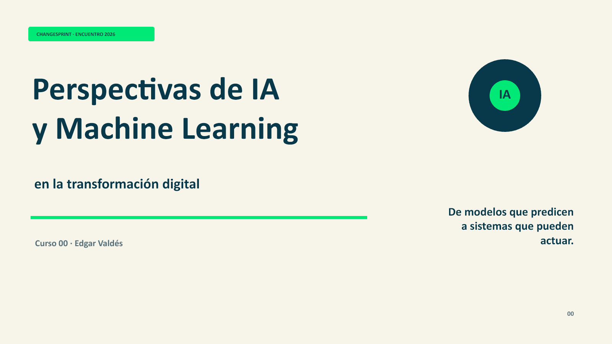

Programa de inteligencia artificial · Edgar Valdés
Entender.
Gobernar.
Transformar.
Dos sesiones conectadas para pasar de comprender qué puede hacer la IA a decidir cómo usarla con responsabilidad en lo público.
Ruta de aprendizaje
Una conversación en dos movimientos: primero el mapa; después, las decisiones.
Perspectivas de IA y Machine Learning
De modelos que predicen a sistemas que pueden actuar: fundamentos, ramas de la IA, IA agéntica y las capacidades que América Latina observa mediante ILIA.

IA responsable en lo público
Un taller para diseñar decisiones que se puedan explicar, supervisar y corregir, con controles concretos para pasar de los principios a la práctica.

El encuentro
Cambio público, en modo sprint.
ChangeSprint reúne aprendizaje aplicado, conversación y diseño para fortalecer la innovación pública. Este programa aporta el lente tecnológico: entender la IA sin simplificarla y convertir la responsabilidad en decisiones de diseño.